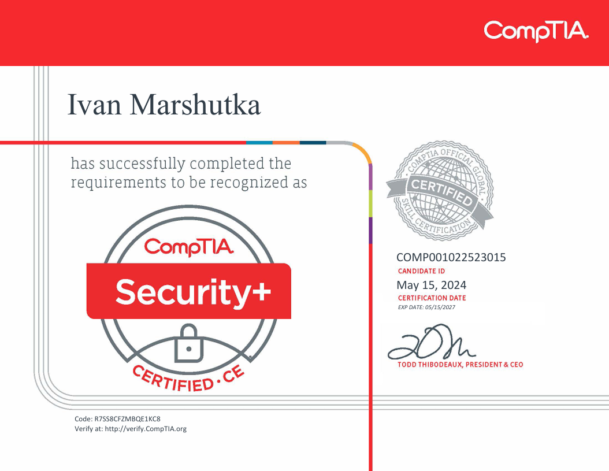
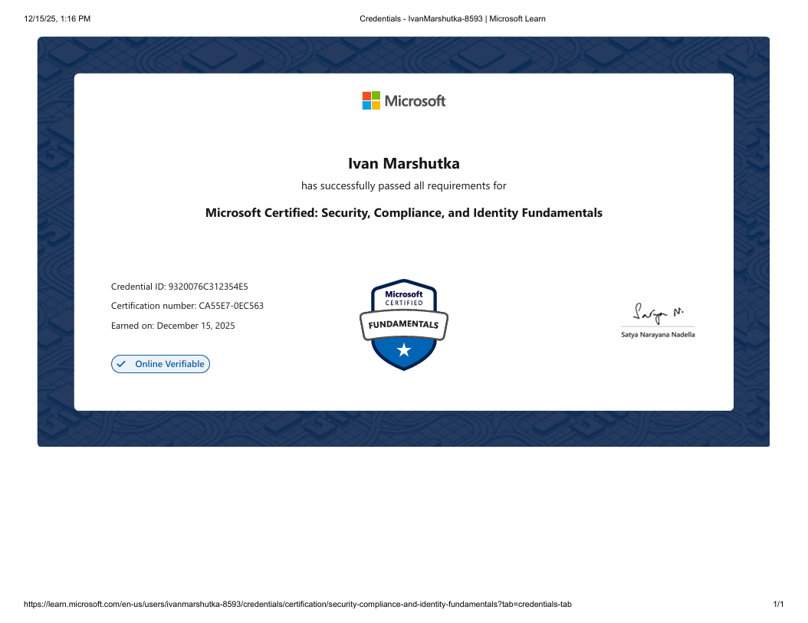
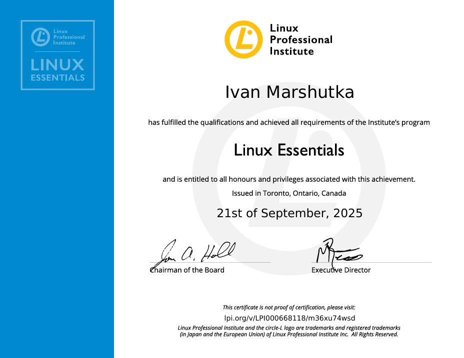

Cross-Platform IAM Federation Lab
Okta · Keycloak · Docker
SAML 2.0 SSO federation lab spanning two identity providers.
IT SECURITY SPECIALIST
📍 Utqiaġvik, AK 99723
IT Security Specialist for a tribal college in Alaska with 2 years of experience, a bachelor's degree in information technology, and multiple industry certifications. My work spans IAM, GRC, incident response, and risk & vulnerability management — applying frameworks like GLBA, NIST 800-171, and PCI DSS across Cisco, Microsoft, and enterprise security tooling. Progressing toward cloud & cybersecurity engineering.
01 — ABOUT
Welcome! I'm an IT Security Specialist for a tribal college in Alaska with 2 years of work experience, a bachelor's degree in information technology, and multiple industry-recognized certifications and projects. My role spans a broad range of security functions, including IAM, GRC, incident response, and risk and vulnerability management. I work with cybersecurity frameworks like GLBA, NIST 800-171, and PCI DSS. I operate Cisco, Microsoft, and other enterprise security tools. I'm committed to continuous learning and improvement, with my career progressing toward cloud and cybersecurity engineering, where I aim to automate, optimize, and scale secure technical solutions.
02 — PROJECTS
Okta · Keycloak · Docker
SAML 2.0 SSO federation lab spanning two identity providers.
Azure Sentinel SIEM · Azure VM · KQL
Log analysis, configuration, and KQL querying against live attack telemetry.
Splunk SIEM · Python · VMware · SPL
Python automation against the VirusTotal API for IP reputation checks.
Tenable Nessus · Windows Defender Firewall & Endpoint Protection
Scanning, prioritizing, and remediating vulnerabilities on Windows endpoints.
Elastic SIEM · Elastic Agent · Kali Linux VM · VMware
Deploying Elastic SIEM to monitor and secure a virtualized environment.
MySQL Workbench · SQL
Building and manipulating a relational database with structured query analysis.
Windows Server 2022 · Hyper-V · Windows 11 · DNS · AD DS
Standing up a domain controller with AD, DNS, and domain-joined clients.
Cyturus · Notion
Mapping GLBA safeguards to institutional controls and compliance evidence.
Python
Python application automating architecture for a client knowledge base.
03 — EDUCATION & CERTIFICATIONS
Verified credentials — degree and industry certifications.





